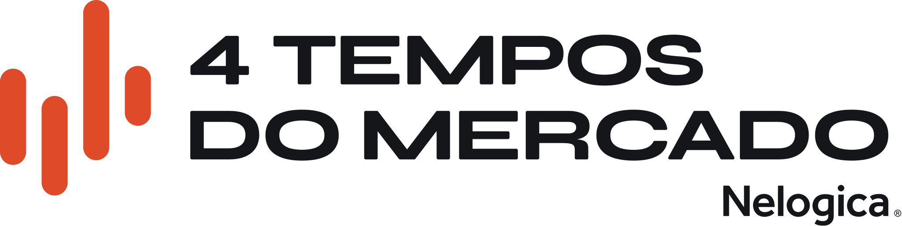
manual de marca · para o time de design
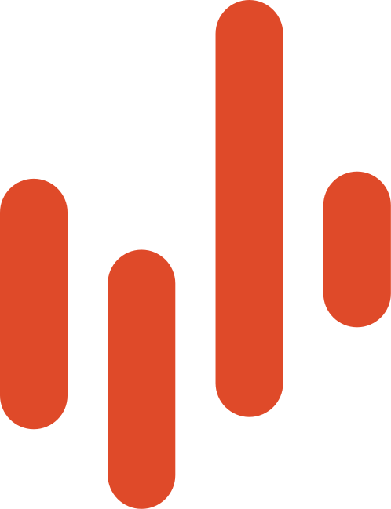
Quatro indicadores prontos para uso no Profit, vendidos como um produto só. A Nelogica lança com o Ports Trader na Black November de 2026.
O público é o trader iniciante de day trade. Ele usa a mesma estratégia todo dia e perde quando o mercado muda. A carteira entrega uma ferramenta para cada momento, e o curso ensina a reconhecer em qual momento ele está.
"o mercado muda de tempo, e o trader precisa saber em qual deles está." OP, mini bio do parceiro
"4 indicadores, 1 carteira" é o número da OP. O preço também pode ir grande. A taxa de acerto nunca.
Nenhum tempo ganha cor própria, tamanho maior ou posição de destaque. A ordem é sempre virar, acelerar, romper, voltar.
Nada de valor por dia, "renda passiva" ou "no automático". Na página da campanha o preço aparece como 000 até a live 01.
A campanha mostra o loss com naturalidade. Em print de gráfico, a saída no stop fica na tela, sem corte.
| glifo | tempo | o que o mercado está fazendo | leitura | ativos | indicador na OP |
|---|---|---|---|---|---|
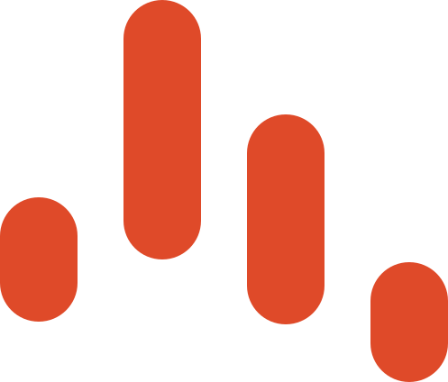 | Tempo de virar | Virando e começando uma nova tendência de curto prazo | reversão | WIN, WDO | Reversão WIN e WDO |
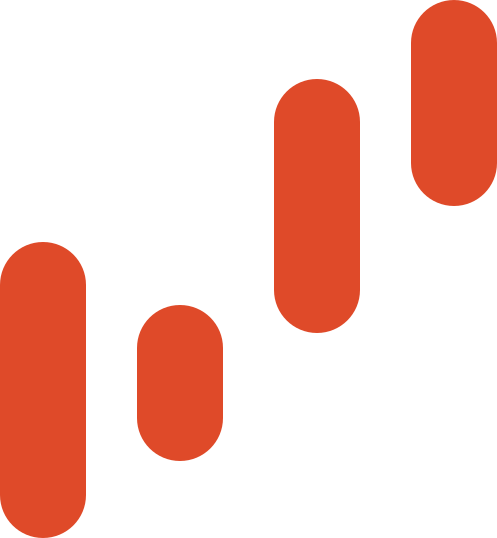 | Tempo de acelerar | Acelerando a favor da tendência de curto prazo | impulso | BIT | Tendência BITFUT |
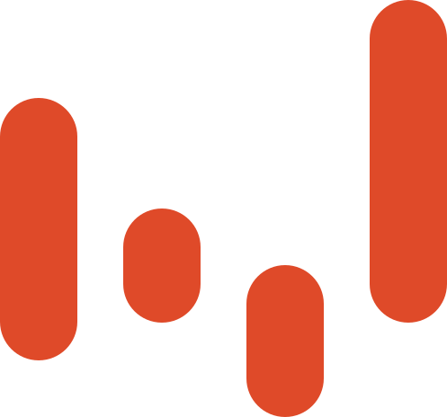 | Tempo de romper | Seguindo uma direção durante o pregão inteiro | tendência do dia | WIN, WDO, BIT | Tendência WIN, WDO e BIT |
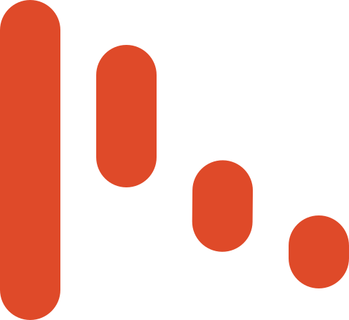 | Tempo de voltar | Esticado demais e voltando para o lugar, no swing | retorno à média | ações | Reversão em swing trade de ações |
Os glifos têm 48px de largura, todos. O Figma marca a ligação entre o nome do tempo e o indicador da OP como "extrapolada (alta confiança): confirmar".
Símbolo de quatro barras em cápsula, nome e assinatura Nelogica®. O logo é desenhado; não refaça o nome em Syne.
Ícone/4 Tempos do Mercado: favicon e marca em tamanho pequeno. Versões Laranja, Mono tinta e Mono papel.
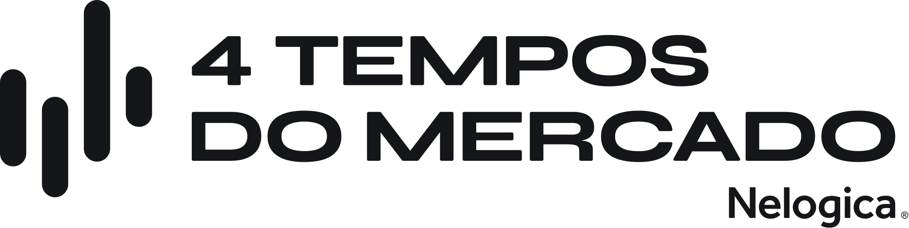
Cada tempo tem logo e ícone de quatro cápsulas. A altura das cápsulas muda de um tempo para outro; a cor não.
Os quatro ícones são dimensionados pela largura, para pesarem igual quando aparecem juntos.
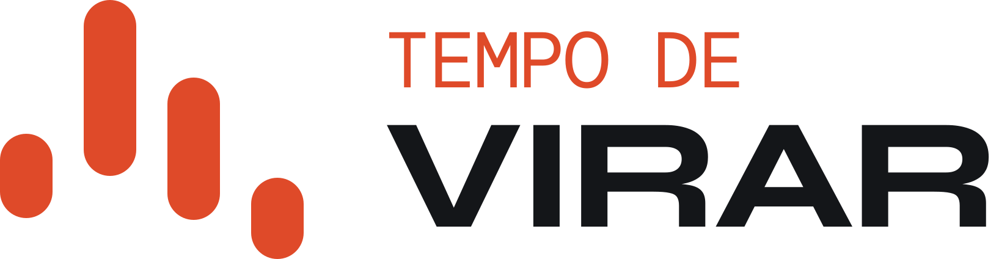
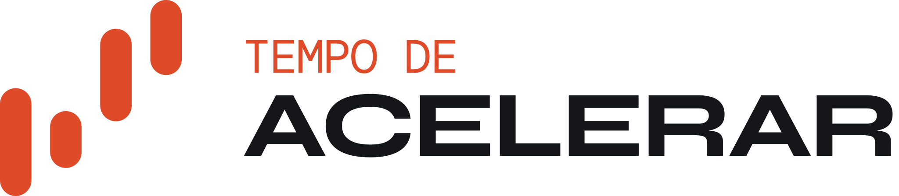
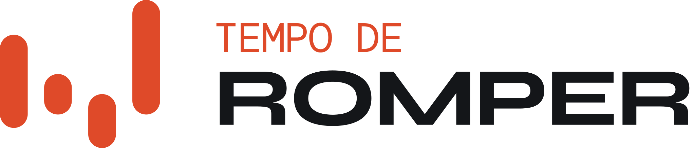
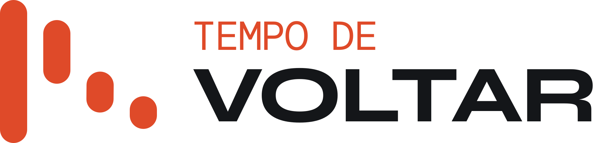
#DF4A29 é a cor da marca. Os derivados mantêm o matiz (33,9 em OKLCH) e só existem para estado, texto e sombra.
No laranja vai só texto grande: 24px, ou 19px em Syne 700. Papel sobre laranja dá 3,67:1.
| variável | hex | papel (alias na coleção Cor) | |
|---|---|---|---|
| brand/papel | #F4F3EF | fundo padrão · texto sobre laranja e tinta | |
| brand/pedra | #E5E3DC | fundo do modo Pedra · surface-alt | |
| brand/tinta | #141619 | texto · fundo do modo Tinta · anel de foco | |
| brand/laranja | #DF4A29 | primary · accent · surface-marca | |
| brand/laranja-hover | #CF4020 | primary-hover | |
| brand/laranja-ativo | #BC391C | primary-active | |
| brand/laranja-texto | #B63518 | laranja em texto pequeno sobre papel e pedra | |
| brand/laranja-claro | #E4583A | laranja em texto pequeno sobre tinta | |
| brand/laranja-sombra | #CD4527 | borda e meio-tom no modo Laranja · cápsulas do retrato |
Estilos de cor no Figma: Branco, Segunda cor, Preto e CTA - 4T batem com papel, pedra, tinta e laranja.
neutro/700 é o texto de corpo no papel · 600 o texto secundário · 500 a borda de componente (mínimo 3:1) · 200 a borda de card
sinal · as cores do gráfico
O Figma não descreve o papel de saida-roxo nem de neutro. O How-To fala em dourado no alvo e fúcsia no stop: confirmar se saida e saida-roxo são esses dois.
feedback · estados do campo
A versão -texto é a que vai em letra pequena. Erro e sucesso sempre com cor e mensagem.
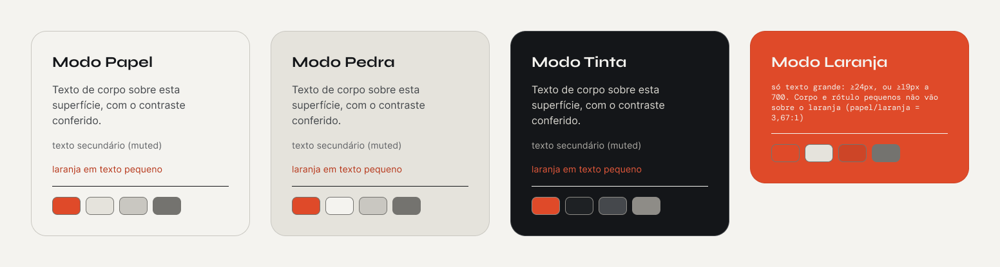
Os componentes usam variável semântica: color/surface, on-surface, texto-corpo, muted, border. Troque o modo do frame e tudo dentro dele se ajusta.
Os modos têm o mesmo nome das classes do código: .superficie-papel, -pedra, -tinta, -laranja. No Laranja, corpo e rótulo pequeno ficam de fora.
Os 4 tempos do mercado
A carteira marca a leitura no gráfico; quem decide é você.
live 02 · 10.11 · 9h
| estilo | desktop | entrelinha | estilo | desktop | entrelinha |
|---|---|---|---|---|---|
| Título/Display | 61,04px | 1,06 | Corpo/Lead | 20px | 1,5 |
| Título/H1 · H2 | 48,83 · 39,06px | 1,15 | Corpo/Base · Pequeno | 16 · 14px | 1,5 |
| Título/Hero | 64px · -2% | 1,06 | Mono/Rótulo · Etiqueta | 14 · 12px caixa alta | 1,3 · 1 |
Escala de razão 1,25 sobre 16px. Os estilos guardam o valor de celular; o de desktop está na coleção Responsivo.
Respiro: 8 entre par, 16 entre textos, 24 entre itens, 48 a 64 entre blocos. A seção usa 96 no desktop.
Botão, campo, etiqueta e nav são cápsula. 24 e 32 só em card e mídia.
Elevação 1 a 4. A página fica sem sombra; a 3 é da nav; a 4, do modal.
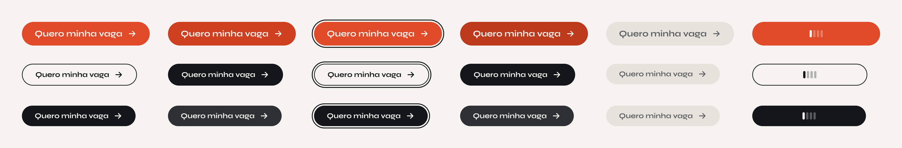
Botão · linhas: Primário, Secundário, Tinta · colunas: repouso, hover, foco, ativo, desabilitado, carregando. Primário em Syne 700 a 19px, nunca menor. Sobre laranja, use o Tinta.
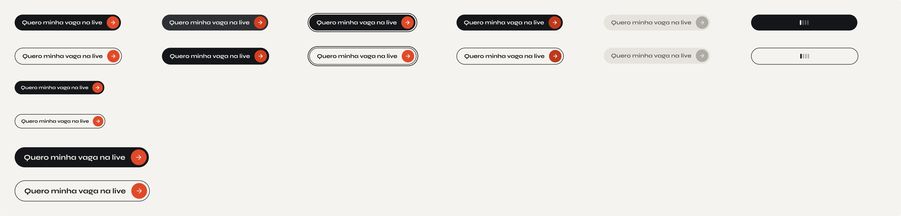
Botão com disco · Tinta e Contorno, mesmos 6 estados · Compacto 44px, Padrão 52px, Grande 66px. Não divide a tela com o Primário.
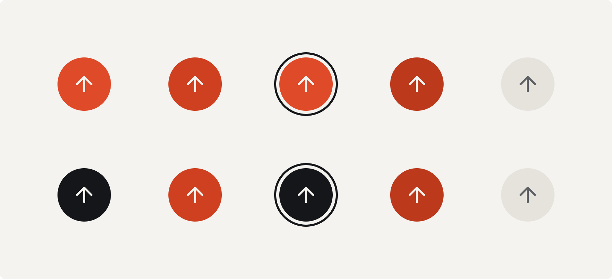
Só de disco · alvo de 52px · Laranja e Tinta · rótulo acessível obrigatório no código.
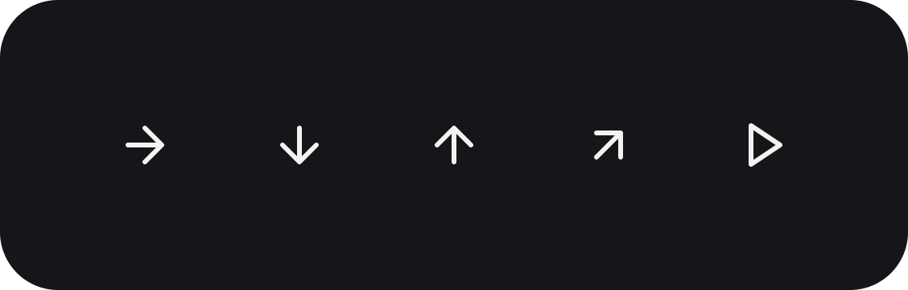
Ícones do disco (Lucide, traço 2): seta direita avança, baixo rola, cima-direita sai, play.
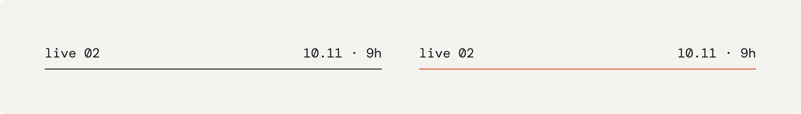
A2 · data, hora, preço e ativo em DM Mono caixa baixa, sobre fio de 1px. Fio laranja só para "a próxima". Nunca rotula ganho, percentual ou acerto.
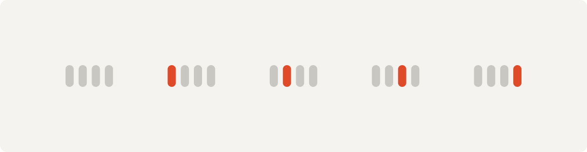
A1 · marca a posição numa sequência de quatro (os tempos, os módulos). Nunca importância, nunca em lista que não tenha quatro itens.
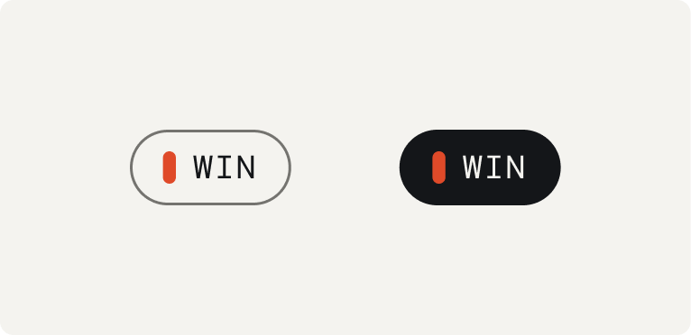
Etiqueta · contorno e cheia · ativo, tempo gráfico ou plano. Mono 12 em caixa alta, sem hover; o laranja fica só na cápsula.
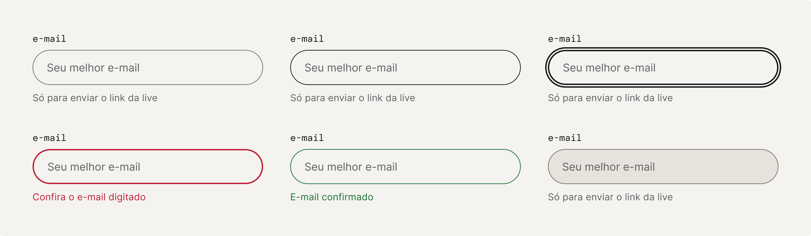
Campo · repouso, hover, foco, erro, sucesso, desabilitado · cápsula de 52px, fonte de 16px, rótulo sempre visível em mono.
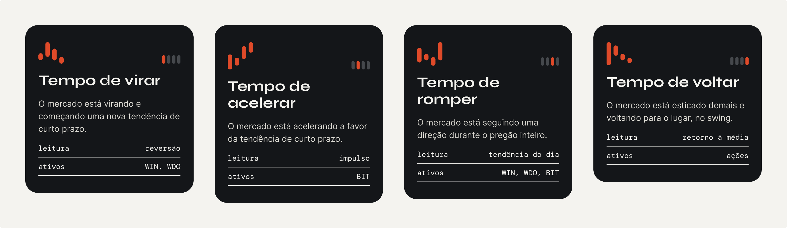
Cartão do tempo · glifo de 48px de largura, compasso com a posição, ficha A2. Ordem fixa. Sem clique, sem hover.
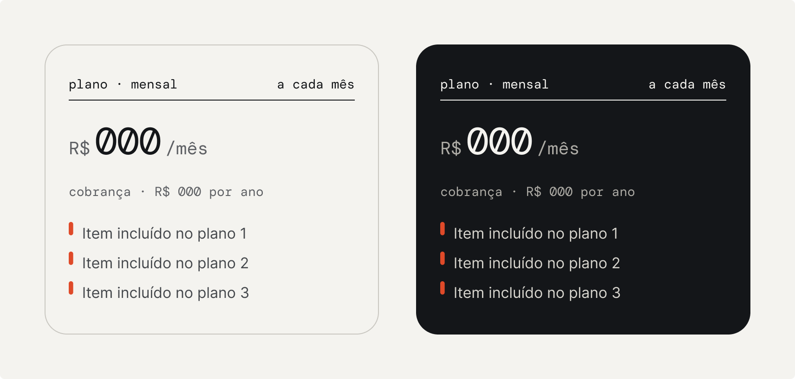
Plano · preço em 000 até a live 01
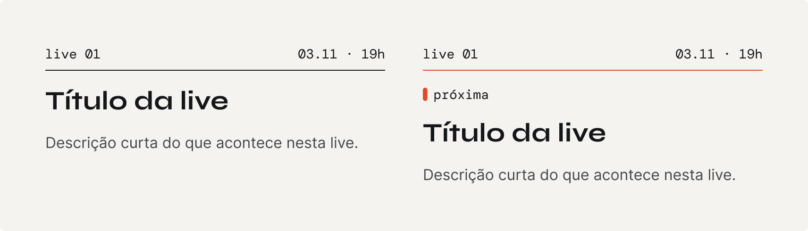
Agenda item · a próxima live leva fio laranja
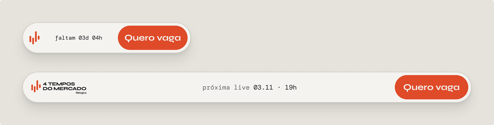
Nav em cápsula · papel + Elevação/3
PT · título Syne 700 a 120px · duas faixas laranja a 46px · botão com disco a 44px com disco de 92px · retrato com meio-tom laranja
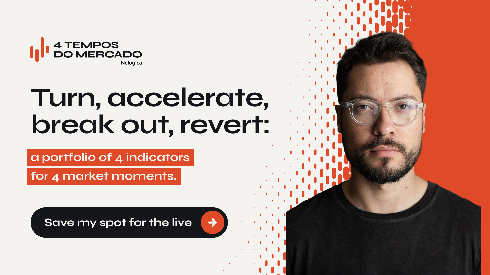
EN · "Turn, accelerate, break out, revert:"
ES · "Girar, acelerar, romper, volver:"
5 coleções: Primitivos, Cor (4 modos), Forma e Espaço, Responsivo (Mobile e Desktop), Tipografia. Estilos: 7 de cor, 21 de texto, 4 de elevação.
Cada um traz a regra de uso na descrição. Leia antes de destacar.
Exporte daqui; não redesenhe.
Classes .superficie-* e os mesmos nomes de variável. O zip com os tokens não estava visível na leitura do arquivo: peça o link.